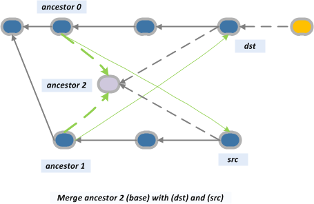

В Git для команд merge и pull можно использовать опции, определяющие стратегию слияния изменений.
Основная опция -s <стратегия> определяет стратегию слияния. Возможные значения:
Так же есть уточняющая опция -X<механизм>, которая принимает значения:
Следует обратить внимание, что есть и стратегия с именем ours, и механизм с именем ours, и это разные вещи!
Выдержка из документации:
The merge mechanism (git-merge and git-pull commands) allows the
backend merge strategies to be chosen with -s option. Some strategies
can also take their own options, which can be passed by giving
-X<option> arguments to git-merge and/or git-pull.
resolve
This can only resolve two heads (i.e. the current branch and
another branch you pulled from) using a 3-way merge algorithm. It
tries to carefully detect criss-cross merge ambiguities and is
considered generally safe and fast.
recursive
This can only resolve two heads using a 3-way merge algorithm. When
there is more than one common ancestor that can be used for 3-way
merge, it creates a merged tree of the common ancestors and uses
that as the reference tree for the 3-way merge. This has been
reported to result in fewer merge conflicts without causing
mis-merges by tests done on actual merge commits taken from Linux
2.6 kernel development history. Additionally this can detect and
handle merges involving renames. This is the default merge strategy
when pulling or merging one branch.
The recursive strategy can take the following options:
ours
This option forces conflicting hunks to be auto-resolved
cleanly by favoring our version. Changes from the other tree
that do not conflict with our side are reflected to the merge
result.
This should not be confused with the ours merge strategy, which
does not even look at what the other tree contains at all. It
discards everything the other tree did, declaring our history
contains all that happened in it.
theirs
This is opposite of ours.
subtree[=path]
This option is a more advanced form of subtree strategy, where
the strategy makes a guess on how two trees must be shifted to
match with each other when merging. Instead, the specified path
is prefixed (or stripped from the beginning) to make the shape
of two trees to match.
octopus
This resolves cases with more than two heads, but refuses to do a
complex merge that needs manual resolution. It is primarily meant
to be used for bundling topic branch heads together. This is the
default merge strategy when pulling or merging more than one
branch.
ours
This resolves any number of heads, but the resulting tree of the
merge is always that of the current branch head, effectively
ignoring all changes from all other branches. It is meant to be
used to supersede old development history of side branches. Note
that this is different from the -Xours option to the recursive
merge strategy.
subtree
This is a modified recursive strategy. When merging trees A and B,
if B corresponds to a subtree of A, B is first adjusted to match
the tree structure of A, instead of reading the trees at the same
level. This adjustment is also done to the common ancestor tree.
Подробнее о стратегиях слияния (на русском) тут:
http://habrahabr.ru/post/195674/
Стратегия resolve
Стратегия resolve — классическое трехсторонее слияние (three-way merge). Стандартный алгоритм трехстороннего слияния применяется для двух файлов с общим предком. Условно этот алгоритм можно представить в виде следующих шагов:
Эта стратегия имеет один недостаток: в качестве общего предка двух веток всегда выбирается наиболее ранний общий коммит. Для случая из нашего первого примера это не страшно, можно смело применять git merge feature -s resolve, и результат будет ожидаемым:
master: A - B - C - D - (M)
\ /
feature: X - Y
Здесь C — общий коммит двух веток, дерево файлов, соответствующее этому коммиту, принимается за общего предка. Анализируются изменения, произведенные в ветках master и feature со времен этого коммита, после чего для коммита (M) создается новая версия дерева файлов в соответствии с пунктами 4 и 5 нашего условного алгоритма.
В каком же случае проявляется недостаток стратегии resolve? Он проявляется в том случае, если для коммита (M) нам пришлось разрешить конфликты, после чего мы продолжили разработку и еще раз хотим выполнить git merge feature -s resolve. В этом случае в качестве общего предка снова будет использован коммит C, и конфликты произойдут снова и будут нуждаться в нашем вмешательстве.
Стратегия recursive
Данная стратегия решает проблемы стратегии resolve. Она так же реализует трехстороннее слияние, но в качестве предка используется не реальный, а «виртуальный» предок, который конструируется по следующему условному алгоритму:
Результат этого действия принимается за общего предка и проводится трехсторонее слияние.
Для иллюстрации этой стратегии позаимствуем пример из статьи Merge recursive strategy из блога «The plasticscm blog»:
Итак, у нас есть две ветки: main и task001. И так вышло, что наши разработчики знают толк в извращениях: они слили коммит 15 из ветки main с коммитом 12 из ветки task001, а так же коммит 16 с коммитом 11. Когда нам понадобилось слить ветки, оказалось, что поиск реального предка — дело неблагодарное, но стратегия recursive с ее конструированием «виртуального» предка нам поможет. В результате мы получим следующую картину:

Стратегия recursive имеет множество опций, которые передаются команде git-merge с помощью ключа -X:
Стратегия octopus
Эта стратегия используется для слияние более чем двух веток. Получившийся в итоге коммит будет иметь, соответственно, больше двух родителей.
Данная стратегия предполагает большую осторожность относительно потенциальных конфликтов. В связи с этим порой можно получить отказ в слиянии при применении стратегии octopus.
Стратегия ours
Не следует путать стратегию ours и опцию ours стратегии recursive.
Выполняя git merge -s ours obsolete, вы как бы говорите: я хочу слить истории веток, но проигнорировать все изменения, которые произошли в ветке obsolete. Иногда рекомендуют вместо стратегии ours использовать следующий вариант:
$ git checkout obsolete
$ git merge -s recursive -Xtheirs master
Стратегия ours — более радикальное средство.
Стратегия subtree
Для иллюстрации данной стратегии возьмем пример из главы Слияние поддеревьев книги «Pro Git».
Добавим в наш проект новые удаленный репозиторий, rack:
$ git remote add rack_remote git@github.com:schacon/rack.git
$ git fetch rack_remote
warning: no common commits
remote: Counting objects: 3184, done.
remote: Compressing objects: 100% (1465/1465), done.
remote: Total 3184 (delta 1952), reused 2770 (delta 1675)
Receiving objects: 100% (3184/3184), 677.42 KiB | 4 KiB/s, done.
Resolving deltas: 100% (1952/1952), done.
From git@github.com:schacon/rack
* [new branch] build -> rack_remote/build
* [new branch] master -> rack_remote/master
* [new branch] rack-0.4 -> rack_remote/rack-0.4
* [new branch] rack-0.9 -> rack_remote/rack-0.9
$ git checkout -b rack_branch rack_remote/master
Branch rack_branch set up to track remote branch refs/remotes/rack_remote/master.
Switched to a new branch "rack_branch"
Ясно, что ветки master и rack_branch имеют абсолютно разные рабочие каталоги. Добавим файлы из rack_branch в master с использованием squash, чтобы избежать засорения истории ненужными нам фактами:
$ git checkout master
$ git merge --squash -s subtree --no-commit rack_branch
Squash commit -- not updating HEAD
Automatic merge went well; stopped before committing as requested
Теперь файлы проекта rack у нас в рабочем каталоге.